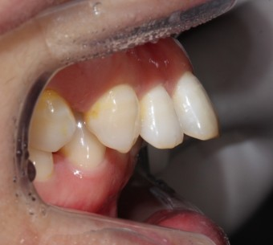

구준영

목차
- 개요
- 성격
- 우기기
- 레전드 어록 및 사건사고
- 환공포증 사건
- 우유부단 사건
- 같이 있는데 외롭다 사건
- 예비군 2년차 사건
- 피해의식 사건
- 블랙큐 맞짱 사건
- 성권이집 정전사건
1.개요
구준영은 1997년 2월 24일 태어났다. 경기도 쪽인가 서울 쪽에서 태어나서 공주로 전학을 온걸로 알고있다.
국민학교
중학교 봉황중학교
고등학교 공주고등학교
대학교 중부대학교 조경학과 (재학중)
군대
제6보병사단 공병 대대
병장 만기전역 풀병가 제대 ㅋㅋ 45일 ㅋㅋ 말이냐 이게 캠프지
2.성격과 외형
사교성이 애매하다
내향적 외향적 둘다가졌다.
같이있는데 외롭다고 한다.
마음이 착하다
잘 우긴다 .피해사례 다수 4번 사건사에서 자세히 다루겠다.
내친구다.
주딩이를 잘내민다.
잘생기고 훈훈한 외모를 가졌다.
박경을 닮았다는 소리를 자주듣는다.
너구리를 닮았다.
3.
우기기 (해결책 동영상)
4.레전드 어록 및 사건사고
1.환공포증 사건
https://www.sexking koo.com
2.우유부단 사건
https://www.wikitree.co.kr/김규황여미새년
3.같이 있는데 외롭다 사건
https://www.wikitree.co.kr/김규황가스라이팅
4.예비군 2년차 사건
https://www.wikitree.co.kr/김규황병신
5.피해의식 사건
https://www.wikitree.co.kr/김규황의잔인함
6.블랙큐 맞짱사건
https://www.wikitree.co.kr/김규황알몸
7.성권이집 정전사건
>https://www.wikitree.co.kr/김규황인성
마치며
다쓰려면 진짜 너무 많아서 힘들다 여러가지 사건사고가 있었지만 소중한 내친구다.